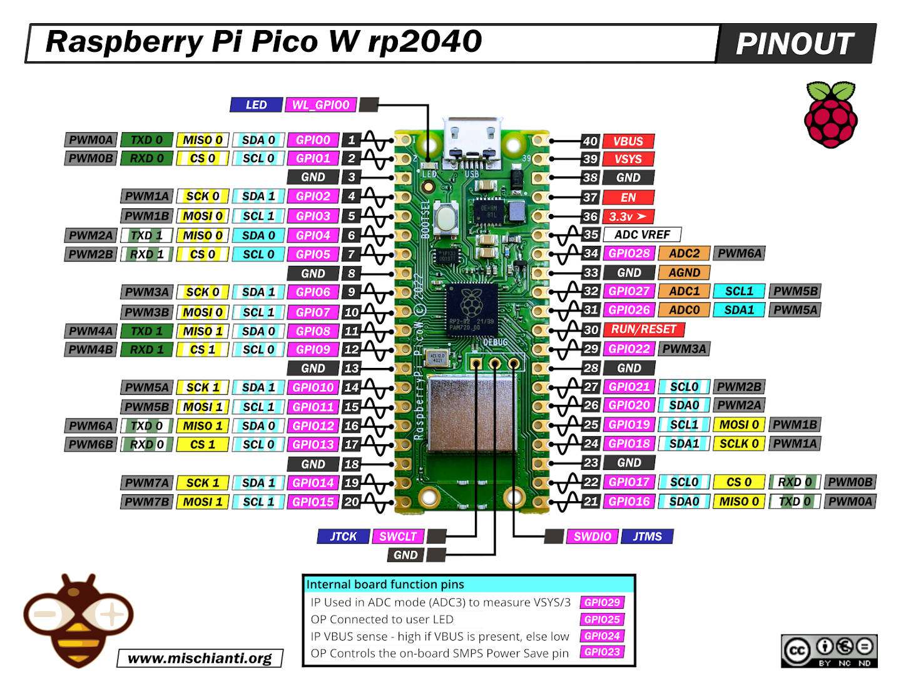
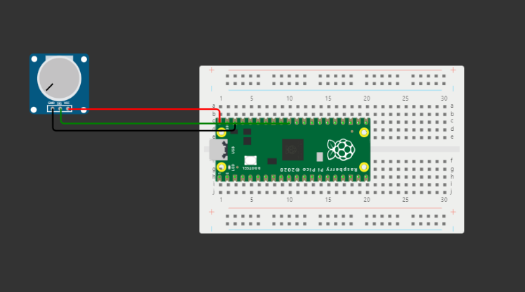

Diagrama
Para el uso del Potenciometro, es necesario conocer el uso correcto las conexiones en nuestra Raspberry Pi Pico. A continuación, se muestra un diagrama para las conexiones:
Como podemos apreciar, losm PIN 40, PIN 38 y PIN 31 son los que necesitaremos para la implementación de nuestro Potenciometro.
Potenciometro

El potenciómetro sirve para limitar el flujo de corriente eléctrica de manera variable. Provocando una caída de tensión en relación a la resistividad. Básicamente es una resistencia variable.
| Nombre | Descripción |
|---|---|
| GND | Tierra |
| SIG | Salida, se conecta un pin análogo de salida |
| VCC | Voltaje |
Micro-Python
Para el uso del Potenciometro en Micro-Python, se implemento las siguientes lineas de códigos:
import utime
from machine import Pin
potentiometer = machine.ADC(26) # Aquí podemos usar el GP26 o 31
conversion_factor = 3.3 / (65535) #Voltaje de 3.3
while True:
voltage = potentiometer.read_u16() * conversion_factor # Convertidor de 0 - 3.3 volts
print(voltage) # Imprime el valor del voltaje tomado
utime.sleep(1) # Acción para actualizar en consola
Demo en Wokwi
El enlace al Demo de Wokwi se encuentra aquí.
A continuación, la imágen del proyecto creado en Wokwi que podemos presentar de la siguiente forma:
